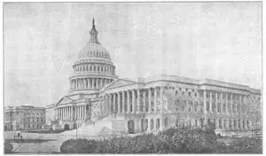
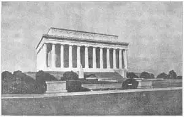

85
AL AND OL
首都和国会大厦

“HE LOST his head completely.” You’ve heard people say that about some one who got so excited he didn’t know what he was doing. But the people didn’t mean exactly what they said. No one could really lose his head without losing his life with it. Which is just another way of saying that every living person has a head.
Like a person, a country has a head—a chief ruler, a president, a king, a prime minister, a dictator. And where the chief ruler rules is generally the capital city. “Capital” comes from a word meaning head.
After the American Revolution the new republic of the United States had to have a capital. After trying out both New York and Philadelphia, it was decided to build an entirely new city as a new capital for the new nation.
A place on the Potomac River was chosen, a place of fields and forests. It was named Washington. Frenchmen had helped the Americans in the Revolution and now a Frenchman helped them with the new city. He was Major L’Enfant, who drew a plan for Washington with wide avenues and streets and parks. With L’Enfant’s plan to go by, the new city was started. But Washington wasn’t much of a city at first—just a few houses in the woods, with “streets” of mud connecting them.
A capital city of course needs a capitol building. You would think both the city and the building would be spelt alike. But “al” means the city, “ol” the building. So a big competition was held to get the best design for a capitol. Many good designs came in. The one chosen was by Dr. William Thornton. Both George Washington and Thomas Jefferson said they liked the Thornton design very much, and so the Capitol was begun.
If there was to be a capitol, there certainly ought to he a special house for the President. So a president’s house was begun the same year as the Capitol. For the first twenty years or so the President’s House was always called just that—the President’s House. But suddenly the name changed and became the White House. Do you know why?
It was on account of a fire. Some soldiers burned both the new Capitol and the President’s House. They were British soldiers who attacked Washington in the War of 1812. After the fire the President’s House still had the walls standing, but the stones were blackened and scorched. The building was repaired and the walls painted white to hide the fire stains, and since then the President’s House has been called the White House.
The Capitol luckily had not been finished when it was burned. It too was rebuilt after the fire, but it wasn’t finished for years and years. At first this Capitol of ours had a low flat dome over the central part. Then this part was outgrown and an addition was built on each end of the old building. These new ends are called wings—the Senate wing at one end and the wing for the House of Representatives at the other. When the new wings were added a larger dome was designed for the center. During the Civil War President Lincoln kept work going on this dome even though workmen were scarce. He felt the dome stood for the Union of the States and that people on the Northern side would be encouraged by seeing this dome growing day by day.
The new dome is almost as big across as the dome of St. Peter’s in Rome. It was made of a new building material—not wood or brick or stone, but iron. To keep iron from rusting, it must be kept painted. Try to think how many buckets of paint forty-three thousand pounds of paint would make. That is more than twenty-one tons, but that’s the quantity of paint it takes each time the dome of the Capitol is painted!
One room in the Capitol is called Statuary Hall. That is where each of the forty-eight States is invited to put two statues of famous men from that State. It’s not safe to tell a secret in Statuary Hall, for your whisper can be heard’ way across the room if you whisper from a certain spot that’s marked by a metal star in the floor. Strange to say, the star was not put there for the whisper, but to show where the desk of John Quincy Adams used to stand when he was a member of Congress after being President.

No.85-1 THE CAPITOL, WASHINGTON（华盛顿国会大厦）
Courtesy Of The University Prints
The whisper is heard across the room because the waves of sound from that spot all seem to be reflected off the walls and ceiling so as to meet at another spot on the other side of the room.
The Capitol is full of interesting things. One of these is a subway or underground railroad. The trains are pulled by electric engines and they run from the Capitol to the Library of Congress and to the Senate Office Building and the House Office Building. These three buildings aren’t very far away, but the subway trains save the members of Congress time in getting back and forth.
The more you see of the Capitol, the more seems to be left to see. It has often been called the most stately government building in the world. It is important in architecture for another reason, also. It has been such a good building for a capitol that many of the forty-eight State capitols have been made to look something like it, only smaller. It is a building to be proud of, and it is pleasant to think that the corner-stone was laid by our first President.

No.85-2 THE LINCOLN MEMORIAL, WASHINGTON（华盛顿林肯纪念堂）
Courtesy Of The University Prints
There are many other splendid buildings in Washington. One of these is the Lincoln Memorial. The Lincoln Memorial is built in the Greek style and yet differently. It is Greek and yet it is American. That is because it uses the old Greek forms of columns and other details, but uses them in a new way to fit the kind of building it is. You will notice it has no pediment, or triangular space, above the columns as a Greek temple has.
We wait for the train that takes us home from Washington in a huge building called the Union Station. It is so big inside that it makes us feel very small, as the stars do at night when we lie on our backs and look up at them.
New buildings in Washington are now always put up according to Major L’Enfant’s plan for the streets and avenues. This makes Washington one of the most magnificent cities in the world. It is almost the only capital city planned as a capital before it was even begun as a city. If you feel like being proud of your capital, go right ahead. It is worth being proud of.
【中文阅读】
“他真是没头没脑。”你一定听说过人在欣喜若狂时甚至不知道自己究竟在干什么。但他们讲的意思并不真是这样。没有哪个人真的会没头没脑，除非他丢了性命。这也即“头在人就在”的另一种表达。
和人有头脑一样，国家也要有头脑——统治者、总统、国王、首相、独裁者。统治者通常都住在首都。“首都”这个词意指头脑。
美国革命后，作为新共和国的合众国需要一个首都。美国人在考虑了纽约和费城后，决定新建一座城，作为新国家的新首都。
最后决定在波托马克河上选一块地，那里有广袤的田野和茂密的森林。它被命名为华盛顿。法国人曾帮助过美国革命，现在又有一位法国人来帮助美国人建造新城。他就是朗方少校。他为华盛顿设计了宽阔的林荫道、大街和公园。新城就按照郎方的设计规划开工了。但最初的华盛顿还算不上一座城市——就那么几栋房子，在森林里，靠“土街”相互连接。
既然是首都，就必须要有国会大厦。你可能会想作为城市的“capital”和作为大厦的“capitol”，两者的英语名称拼写起来很相似呀。但“al”意指城市，“ol”意指大厦。于是举行了一场盛大的国会大厦设计竞标比赛。优秀方案纷至沓来。威廉·桑顿博士的方案被选中了。乔治·华盛顿和托马斯·杰斐逊都非常喜欢他的设计，于是，国会大厦诞生了。
既然有了国会大厦，当然就应该为总统造一座特别的住宅。因此，一栋总统住宅就这样和国会大厦同年开工了。在起初的二十多年里，总统的住宅一直称作“总统府”。但突然有一天改叫“白宫”了。你知道什么原因吗？
原来是因为一场大火。美英战争时英国军队攻入华盛顿，几个英国士兵放火烧了新造的国会大厦和总统府。大火之后，总统府的墙壁还在，只是石块都烧焦变黑了。总统府得以重修，墙壁涂成白色，以掩盖烧过的痕迹。从那以后，总统府就叫做“白宫”了。
幸运的是，士兵放火时国会大厦还没有造好。大火之后就开始对它进行重建，但好多年后还是没有完工。一开始，我们的这座国会大厦在中央上方建了一个扁平型圆 顶。后来又对这个部位进行了扩展，并在大厦原先的两端作了添加。新加的部分叫做“翼部”——一端是“参议院”，另一端是“众议院”。添了翼部之后，又给中央设计了一个更大的圆顶。美国内战期间，尽管工人短缺，林肯总统还是坚持要把这座圆顶工程做好。他认为这座圆顶是美利坚合众国的象征，北方的美国人看到圆顶在一天天增高，就会备受鼓舞。
这座圆顶几乎和圣彼得大教堂的圆顶一般大小。它是由一种新型材料建成——不是木、砖、石，而是铁。为了防止铁生锈，就必须经常刷漆。试想一下，四万三千镑油漆需要用多少个桶来装啊！这差不多有二十多吨重，而这正是国会大厦圆顶一次刷漆所用的量。
国会大厦有间房叫做“塑像馆”。馆里陈列着从四十八个州知名人物中每州选出两名做成的雕像。在塑像馆里讲秘密可不安全，即便是耳语，但只要站在地板上标有金属星的地方说，整个房间都能听到。说来奇怪，这个星号并不是用来窃听的，而是表明那是约翰·昆西·亚当斯总统卸任后，当选众议员时摆放办公桌的地方。
整个房间都能听到耳语声，是因为从房间某个地方发出的声波似乎全部被墙壁和天花板反射到房间另一边某个地方。
国会大厦里有很多有趣的东西。其中一个是地铁或地下火车。火车靠电动机带动，从国会大厦，经国会图书馆，到参众两院办公楼。这三座建筑物虽相距不远，但地铁还是为议员们节省了往返时间。
你在国会大厦看得越多，就越觉得没看够。它通常被称为世界上最雄伟壮观的政府大楼。还有一个原因使它在建筑领域也占有一个非常重要的地位，那就是作为国会大厦它已成为完美的标志性建筑，从而使许多州的议会大厦都竞相仿效，只不过造型略小罢了。这是一栋值得美国人民骄傲的建筑物。一想到房角石是第一任总统亲手放置的，就更令人欢欣了。
华盛顿还有许多其他优秀的建筑物。其中一个就是林肯纪念堂。它是按希腊风格而建，但又有所不同。它既含希腊风格，又有美国特征。虽然在柱式和其他细节上遵循了古希腊式建筑风格，但为了适应建筑物的整体面貌，又加入了某种新形式。你会看到它省去了希腊神庙柱头上的人字形山墙装饰或三角形各间花饰。
我们在华盛顿一个叫做“联邦车站”的大厦里等火车回家。站内大厅简直太大了，使我们觉得特别渺小，就像晚上躺着看到的星星那样渺小。
今天华盛顿的新建筑都是按照朗方少校早年的城市规划和街道设计而设置的，从而使华盛顿成为世界上最宏伟壮观的城市之一。它也差不多是唯一的一座在建造之前就按首都设计的城市。如果觉得拥有这样的首都值得骄傲，那就骄傲吧。因为它值得人们为它感到骄傲。